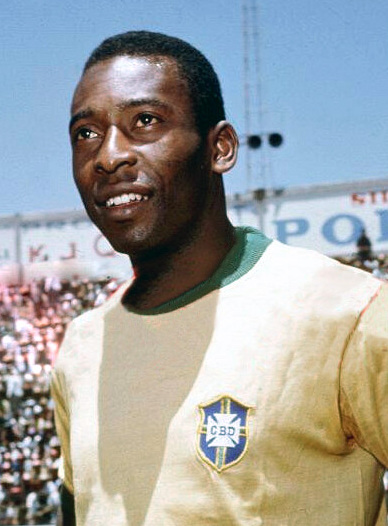

Pelé – The King of Football
Full Name:Edson Arantes do Nascimento
Date of Birth: October 23, 1940
Died: December 29, 2022
Country: Brazil 🇧🇷
Position: Forward / Attacking Midfielder
Clubs: Santos FC (Brazil), New York Cosmos (USA)
Career Highlights
- ⚽ Over 1,280 career goals (Guinness World Record)
- 🏆 3 FIFA World Cup Titles (1958, 1962, 1970) – most by any player
- 👑 Youngest World Cup winner (age 17 in 1958)
- 🏅 FIFA Player of the Century (shared with Maradona)
- 🥇 Olympic Gold Medal (honorary) for global contribution to football
- 🇧🇷 Brazilian national icon who put his country on the football map
🎯 Playing Style
Pelé was famous for:
Explosive speed and skill
Two-footed finishing — could score with either foot or his head
Creative dribbling and passing
Sharp football mind — excellent positioning and awareness
Big-game performances — especially in World Cups
🗣️ Quote About Pelé
“Pelé was the only footballer who surpassed the boundaries of logic.” – Johan Cruyff
“He is the greatest player of all time.” – Diego Maradona
“Pelé is the greatest player in the history of football.” – Zinedine Zidane
“He is the best player I have ever seen.” – Sir Bobby Charlton
“Pelé is a legend, a genius.” – Lionel Messi
“He is the best player in the history of football.” – Cristiano Ronaldo
“Pelé is the greatest player of all time.” – Neymar Jr.
🌟 Fun Facts
- Nicknamed “The King” or “O Rei”
- Scored a hat-trick in a World Cup semifinal at age 17
- Was Brazil's Minister of Sports in the 1990s
- First global football superstar — inspired generations
- His jersey number 10 became legendary because of him

← Back to Football Index